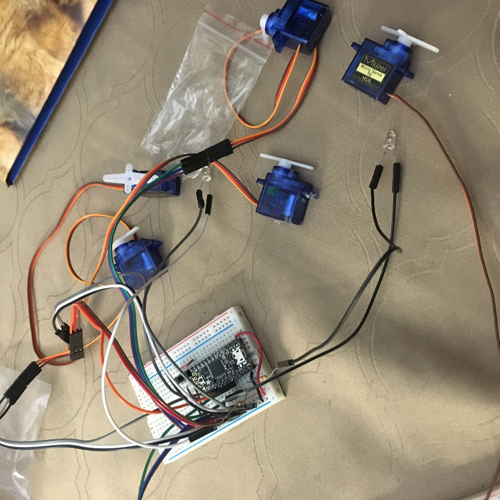
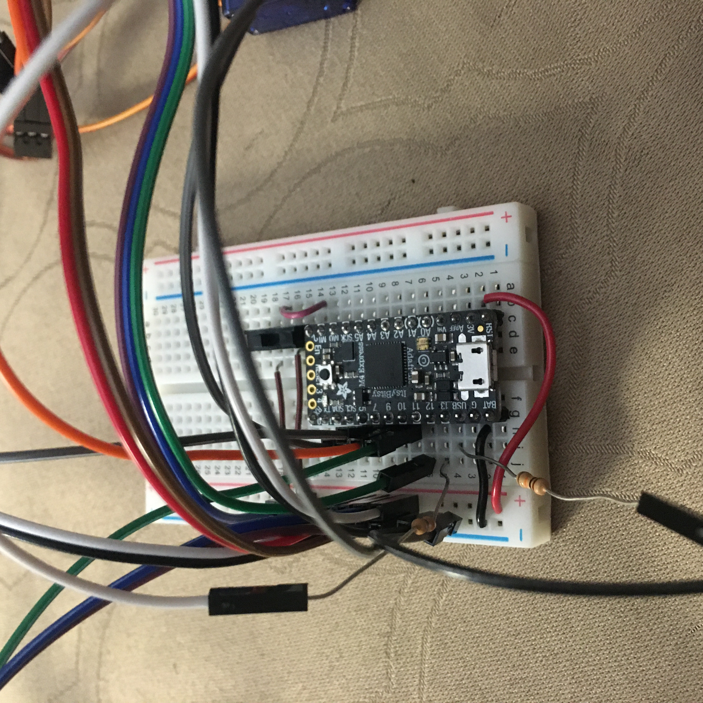

I drew inspiration from robot insects that use ultrasound to determine obstacles. One specific example can be found at this link.
Here we see a switch on pin 2, which sets the state for the pins. There are also 5 servos from pins 5-11 (5, 7, 9, 10, 11). The two LEDs are on pins 12 and 13, each with a 10kOhm resistor in their respective circuits. The big jumble of wires for the time being is due to each servo having 3 total wires to connect to ground (brown or black), power (red), and a pin (orange). That means 15 wires just to communicate with the 5 servos.

The code used for controlling the 5 servos in anticipation for what they will be used for and two LEDs:
#include < Servo.h >
// some code adapted from http://chaoticvoltage.blogspot.com/2016/12/walter-arduino-insect-robot.html
// Declaration of servos:
Servo SERVO_shaft;
Servo SERVO_front_left;
Servo SERVO_front_right;
Servo SERVO_back_left;
Servo SERVO_back_right;
// ****Calibrate servos' center angle (in microseconds because we'll use "xx.writeMicroseconds();" command). Start with 1500.
const int ANGLE_mid_Shaft = 1550;
const int ANGLE_mid_FLeft = 1550;
const int ANGLE_mid_FRight = 1550;
const int ANGLE_mid_BLeft = 1550;
const int ANGLE_mid_BRight = 1550;
int switch_pin = 2; // pin for reading the switch state
int led_one = 12; // LED pin
int led_two = 13; // LED pin
void setup() {
SERVO_shaft.attach(11); // ***Set up horizontal (shaft) servo's signal pin on arduino.
SERVO_front_left.attach(5); // ***Set up front-left servo's signal pin on arduino.
SERVO_front_right.attach(7); // ***Set up front-right servo's signal pin on arduino.
SERVO_back_left.attach(9); // ***Set up back-left servo's signal pin on arduino.
SERVO_back_right.attach(10); // ***Set up back-right servo's signal pin on arduino.
// Get the servos ready at their middle angles.
SERVO_shaft.writeMicroseconds(ANGLE_mid_Shaft);
SERVO_front_left.writeMicroseconds(ANGLE_mid_FLeft);
SERVO_front_right.writeMicroseconds(ANGLE_mid_FRight);
SERVO_back_left.writeMicroseconds(ANGLE_mid_BLeft);
SERVO_back_right.writeMicroseconds(ANGLE_mid_BRight);
// Serial.begin(9600); // initialize serial communication at 9600 bits per second
//initialize inputs and outputs
pinMode(switch_pin, INPUT);
pinMode(led_one, OUTPUT);
pinMode(led_two, OUTPUT);
}
void loop() {
//turn on the switch
if (digitalRead(switch_pin) == HIGH) { // determines if switch is connected to power
// opening eyes
digitalWrite(led_one, HIGH); //turn on one
digitalWrite(led_two, HIGH); //turn on two
delay(300); //"waking up"
// making sure circuits for the servos work
SERVO_shaft.write(0); // tell servo to go to position in variable 'pos'
SERVO_front_right.write(0);
SERVO_front_left.write(0);
SERVO_back_right.write(0);
SERVO_back_left.write(0);
}
//return to beginning state
else {
digitalWrite(led_one, LOW); //turn off one
digitalWrite(led_two, LOW); //turn off two
// Get the servos ready at their middle angles.
SERVO_shaft.writeMicroseconds(ANGLE_mid_Shaft);
SERVO_front_left.writeMicroseconds(ANGLE_mid_FLeft);
SERVO_front_right.writeMicroseconds(ANGLE_mid_FRight);
SERVO_back_left.writeMicroseconds(ANGLE_mid_BLeft);
SERVO_back_right.writeMicroseconds(ANGLE_mid_BRight);
}
}
An ultrasound sensor has four pins. From left to right, they should be connected to power, a digital pin, a different digital pin, and ground. This can be seen in the circuit below.
The code used for attempting to detect objects using ultrasound (have not determined the source of the issue, but seems to not detect at all because writes 0 cm):
This may be the case since I connected it to 3v instead of 5v; I will try fixing this later this week.
// ---------------------------------------------------------------- //
// Arduino Ultrasoninc Sensor HC-SR04
// Re-writed by Arbi Abdul Jabbaar
// Using Arduino IDE 1.8.7
// Using HC-SR04 Module
// Tested on 17 September 2019
// ---------------------------------------------------------------- //
#define echoPin 2 // attach pin D2 Arduino to pin Echo of HC-SR04
#define trigPin 7 //attach pin D3 Arduino to pin Trig of HC-SR04
// defines variables
long duration; // variable for the duration of sound wave travel
int distance; // variable for the distance measurement
void setup() {
pinMode(trigPin, OUTPUT); // Sets the trigPin as an OUTPUT
pinMode(echoPin, INPUT); // Sets the echoPin as an INPUT
Serial.begin(9600); // // Serial Communication is starting with 9600 of baudrate speed
Serial.println("Ultrasonic Sensor HC-SR04 Test"); // print some text in Serial Monitor
Serial.println("with Arduino UNO R3");
}
void loop() {
// Clears the trigPin condition
digitalWrite(trigPin, LOW);
delayMicroseconds(2);
// Sets the trigPin HIGH (ACTIVE) for 10 microseconds
digitalWrite(trigPin, HIGH);
delayMicroseconds(10);
digitalWrite(trigPin, LOW);
// Reads the echoPin, returns the sound wave travel time in microseconds
duration = pulseIn(echoPin, HIGH);
// Calculating the distance
distance = duration * 0.034 / 2; // Speed of sound wave divided by 2 (go and back)
// Displays the distance on the Serial Monitor
Serial.print("Distance: ");
Serial.print(distance);
Serial.println(" cm");
}